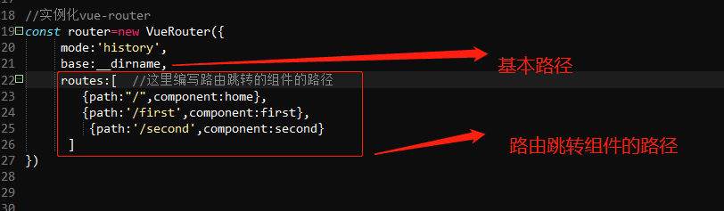
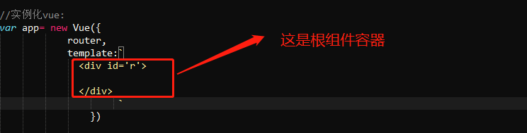
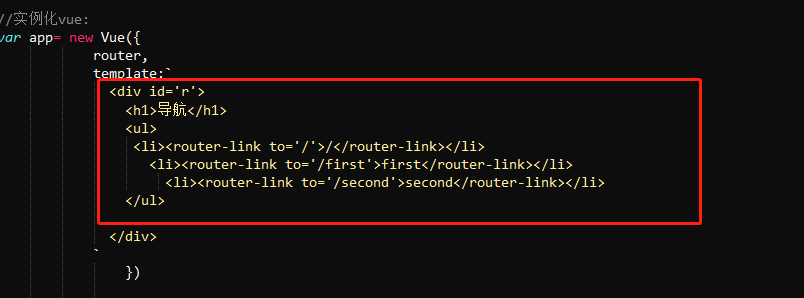
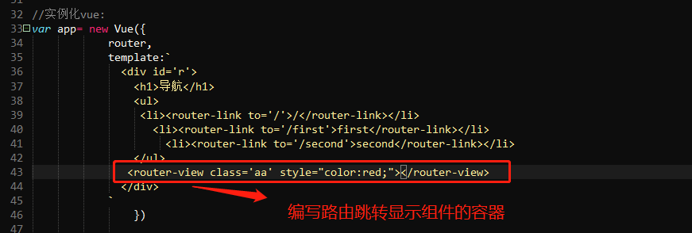
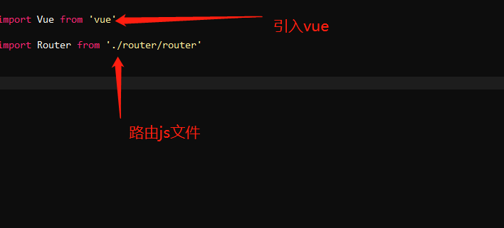
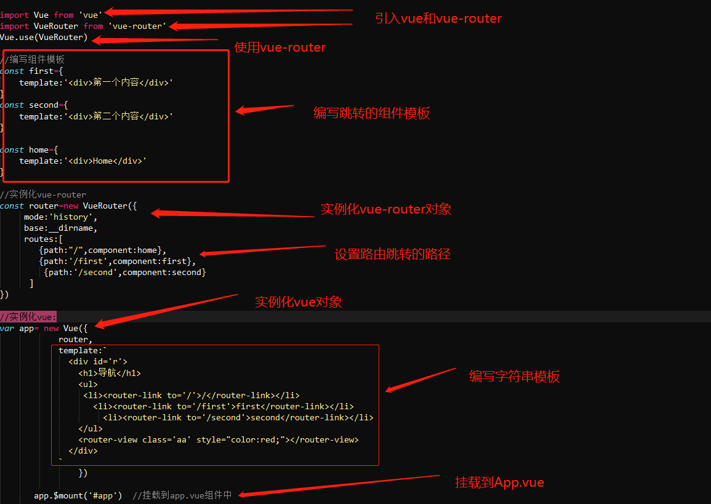

第一步、安装路由： npm install vue-router --save-dev
第二步、编写路由js文件：
1)、路由js文件
2)、在创建的路由js文件中引入 vue.js
import Vue from 'vue'
3)、引入 vue-router：
import VueRouter fome 'vue-router'
4)、使用路由：
Vue.use(VueRouter) //这里的VueRouter 指的是引入vue-router的自定义变量
5)、引入其他组件：
a、如果是js文件手写，则直接使用cont提前定义组件模板对象，例如：
const first={template:'第一个内容
'}
const second={template:'第二个内容
'}
const home={template:'Home
'}
这里就定义了三个组件模板
b、如果是使用.vue文件编写组件，则引入组件文件,例如：
import home from './components/home'
import first from './components/first'
import second from './components/second'
6)、实例化vue-router对象：

7）、实例化vue对象：
a:如果直接写根组件内容：

b：如果使用脚手架的.vue文件写根组件：
8） 编写路由跳转，编写步骤：

1、使用router-link作为标签名编写多个链接
2、给router-link标签设置to属性 ，这个to属性的值就是点击后 跳转到的位置：
'/'表示跳转到首页
'/first' 表示链接到根下面的first组件，以此类推
9）编写路由跳转到某个组件后显示的容器：

在模板的最后位置填写一个标签，这个标签用于显示点击后路由跳转到的 某一个组件后显示组件内容的容器
10)、将挂到App.vue:
app.$mount('#app')
第三步：编写mian.js文件

1、引入vue.js： import Vue fomr 'vue'
2、引入路由js文件： import Router from './router.js'
第四步、运行：npm run dev
完整步骤截图：
1、编写router js :

2、编写入口文件main.js：